Networks
Dr. Ayse D. Lokmanoglu Lecture 12, (B) April 15, (A) April 22
Lecture 12 Table of Contents
| Section | Topic |
|---|---|
| 1 | Building Networks: Nodes and Edges |
| 1.1 | Understanding Network Components |
| 1.2 | Creating Networks from Data Frames |
| 1.3 | Understanding Directed vs Undirected Networks |
| 1.4 | Adding Node Attributes |
| 1.5 | Adding Edge Attributes (Weights) |
| 1.6 | Extracting Network Information |
| 1.7 | Basic Network Statistics |
| 1.8 | Quick Method: graph_from_literal() |
| 2 | Network Structures: Theory Meets Practice |
| 2.1 | Basic Network Structures |
| 2.2 | Random and Theoretical Network Models |
| 2.3 | Comparing Network Structures |
| 2.4 | Famous Example: Zachary’s Karate Club |
| 2.5 | Network Operations |
| 3 | Real World Data: College Communication Network |
| 3.1 | Understanding Real Network Data |
| 3.2 | Loading Real Network Data (The Tidy Way) |
| 3.3 | Exploring the Data Before Building the Network |
| 3.4 | Temporal Patterns: When Do Students Communicate? |
| 3.5 | Building the Network Graph |
| 3.6 | Visualizing the Full Network |
| 3.7 | Creating a Meaningful Subnetwork |
| 3.8 | Network Statistics: Who is Important? |
| 3.9 | Betweenness Centrality: Who Bridges Different Groups? |
| 3.10 | Reciprocity: Do Students Message Each Other Back? |
| 4 | Clustering & Communities |
| 4.1 | Transitivity (Clustering Coefficient) |
| 4.2 | Community Detection (Louvain Method) |
| 4.3 | Visualizing Communities |
| 4.4 | Comparing Communities |
| 4.5 | Edge Betweenness Community Detection (Alternative Method) |
| 5 | Gephi |
| 5.1 | Exporting to Gephi |
| 5.2 | Opening in Gephi |
| 5.3 | Quick Overview of the Gephi Interface |
| 5.4 | Copy Name to Label |
| 5.5 | Running Community Detection |
| 5.6 | Coloring Nodes by Community |
| 5.7 | Sizing Nodes by Degree |
| 5.8 | Applying a Layout Algorithm |
| 5.9 | Filtering the Network |
| 5.10 | Preview and Export |
| 5.11 | Summary of Gephi Workflow |
Introduction: What are Networks?
Before we dive into R code, let’s understand what networks are and why they matter for social science research.
R Exercises
ALWAYS Let’s load our libraries
library(tidyverse)
library(dplyr)
library(igraph)1. Building Networks: Nodes and Edges
1.1 Understanding Network Components
Every network has two fundamental components:
Nodes (Vertices):
The entities in your network
Examples: people, organizations, websites, words
Can have attributes (age, gender, location, etc.)
Edges (Links/Ties):
The relationships or connections between nodes
Examples: friendships, messages, citations, co-occurrence
Can be directed (A → B) or undirected (A — B)
Can have weights (strength of connection)
1.2 Creating Networks from Data Frames
The most common way to represent network data is as an edge list – a data frame where each row is a connection.
Let’s create a simple friendship network:
# Create an edge list as a tibble (tidy data frame)
friendships <- tibble(
from = c("Alice", "Alice", "Bob", "Carol", "David"),
to = c("Bob", "Carol", "Carol", "David", "Alice")
)
# View the edge list
print(friendships)## # A tibble: 5 × 2
## from to
## <chr> <chr>
## 1 Alice Bob
## 2 Alice Carol
## 3 Bob Carol
## 4 Carol David
## 5 David AliceWhat does this mean?
Alice is friends with Bob and Carol
Bob is friends with Carol
Carol is friends with David
David is friends with Alice
Now convert this to an igraph network object:
# Convert edge list to network
g_friends <- graph_from_data_frame(friendships, directed = FALSE)
# Plot it
plot(g_friends,
vertex.size = 30,
vertex.color = "lightblue",
vertex.label.color = "black",
edge.color = "gray",
main = "Friendship Network")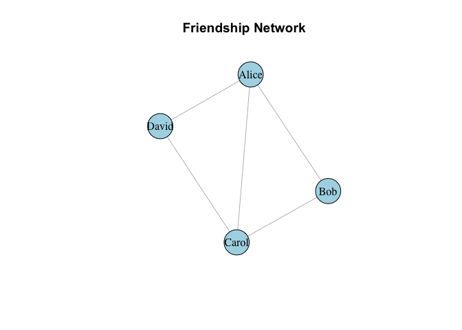
1.3 Understanding Directed vs Undirected Networks
Undirected networks: Relationships are mutual (A—B means A connects to B AND B connects to A)
- Examples: Facebook friends, co-authorship, physical proximity
Directed networks: Relationships have direction (A→B doesn’t mean B→A)
- Examples: Twitter follows, email sent, advice seeking
Let’s create a directed network of who follows whom on social media:
# Create a directed edge list
follows <- tibble(
follower = c("Alice", "Alice", "Bob", "Carol", "David", "David"),
following = c("Bob", "Carol", "Carol", "David", "Alice", "Bob")
)
# View it
print(follows)## # A tibble: 6 × 2
## follower following
## <chr> <chr>
## 1 Alice Bob
## 2 Alice Carol
## 3 Bob Carol
## 4 Carol David
## 5 David Alice
## 6 David Bob# Create directed network
g_follows <- graph_from_data_frame(follows, directed = TRUE)
# Plot with arrows
plot(g_follows,
vertex.size = 30,
vertex.color = "lightcoral",
vertex.label.color = "black",
edge.arrow.size = 0.5,
edge.color = "gray",
main = "Twitter Follow Network (Directed)")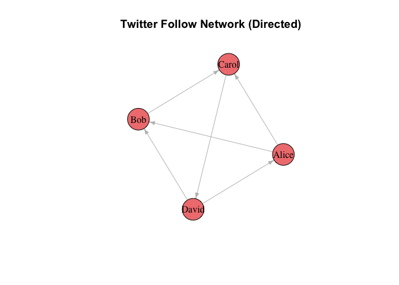
Notice the arrows! Alice follows Bob, but Bob doesn’t follow Alice back.
1.4 Adding Node Attributes
Networks become more interesting when nodes have attributes. Let’s add information about our users:
# Create a node attribute data frame
user_info <- tibble(
name = c("Alice", "Bob", "Carol", "David"),
age = c(20, 22, 21, 23),
major = c("Communication", "Computer Science", "Communication", "Biology")
)
# View it
print(user_info)## # A tibble: 4 × 3
## name age major
## <chr> <dbl> <chr>
## 1 Alice 20 Communication
## 2 Bob 22 Computer Science
## 3 Carol 21 Communication
## 4 David 23 Biology# Create network with node attributes
g_with_attr <- graph_from_data_frame(
d = follows, # Edge list
directed = TRUE,
vertices = user_info # Node attributes
)
# Check the attributes
vertex_attr(g_with_attr)## $name
## [1] "Alice" "Bob" "Carol" "David"
##
## $age
## [1] 20 22 21 23
##
## $major
## [1] "Communication" "Computer Science" "Communication" "Biology"Now we can use these attributes in our visualization:
# Color nodes by major
V(g_with_attr)$color <- ifelse(V(g_with_attr)$major == "Communication",
"lightblue", "lightgreen")
# Size nodes by age
V(g_with_attr)$size <- V(g_with_attr)$age * 2
# Plot
plot(g_with_attr,
vertex.label.color = "black",
edge.arrow.size = 0.5,
edge.color = "gray",
main = "Network with Attributes\n(Blue = Communication, Green = Other)")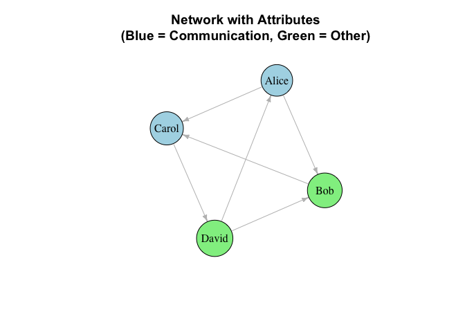
1.5 Adding Edge Attributes (Weights)
Edges can also have attributes, most commonly weights that indicate strength.
# Create weighted edge list (number of messages sent)
messages <- tibble(
from = c("Alice", "Alice", "Bob", "Carol", "David"),
to = c("Bob", "Carol", "Carol", "David", "Alice"),
n_messages = c(15, 8, 3, 12, 20) # Number of messages
)
print(messages)## # A tibble: 5 × 3
## from to n_messages
## <chr> <chr> <dbl>
## 1 Alice Bob 15
## 2 Alice Carol 8
## 3 Bob Carol 3
## 4 Carol David 12
## 5 David Alice 20# Create weighted network
g_weighted <- graph_from_data_frame(messages, directed = TRUE)
# Plot with edge width proportional to weight
plot(g_weighted,
vertex.size = 30,
vertex.color = "lightyellow",
vertex.label.color = "black",
edge.width = E(g_weighted)$n_messages / 3, # Scale edge width
edge.arrow.size = 0.5,
edge.color = "darkblue",
main = "Weighted Network\n(Edge width = number of messages)")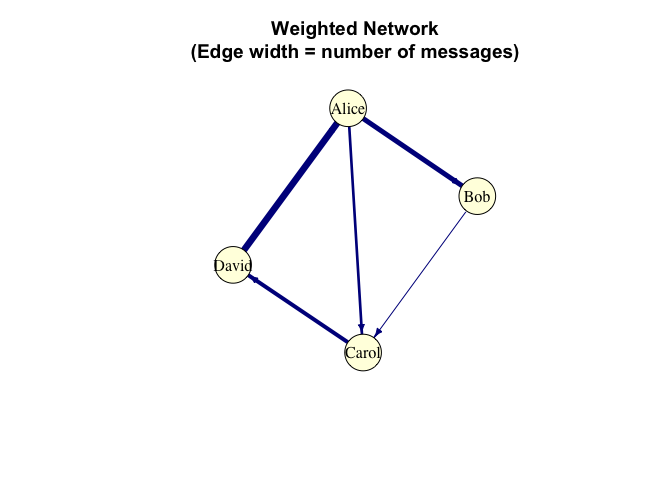
1.6 Extracting Network Information
Once you have a network, you can extract information back into data frames:
Edge List:
# Get edge list back as a data frame
edge_df <- as_data_frame(g_weighted, what = "edges")
print(edge_df)## from to n_messages
## 1 Alice Bob 15
## 2 Alice Carol 8
## 3 Bob Carol 3
## 4 Carol David 12
## 5 David Alice 20Node List:
# Get node list with attributes
node_df <- as_data_frame(g_weighted, what = "vertices")
print(node_df)## name
## Alice Alice
## Bob Bob
## Carol Carol
## David David1.7 Basic Network Statistics
Let’s calculate some basic network properties:
Number of nodes and edges:
print(paste("Number of users:", vcount(g_weighted)))## [1] "Number of users: 4"print(paste("Number of connections:", ecount(g_weighted)))## [1] "Number of connections: 5"Degree: how many connections each person has:
# Degree: how many connections each person has
degrees <- degree(g_weighted, mode = "all")
print(degrees)## Alice Bob Carol David
## 3 2 3 2In-degree: how many people send messages TO this person:
# In-degree: how many people send messages TO this person
in_degrees <- degree(g_weighted, mode = "in")
print(in_degrees)## Alice Bob Carol David
## 1 1 2 1Out-degree: how many people THIS person sends messages to:
# Out-degree: how many people THIS person sends messages to
out_degrees <- degree(g_weighted, mode = "out")
print(out_degrees)## Alice Bob Carol David
## 2 1 1 1Interpretation: - Carol has the highest in-degree (3) – receives messages from many people
- Alice and David are most active (high out-degree)
1.8 Quick Method: graph_from_literal()
For quick prototyping, igraph offers graph_from_literal():
# Undirected network
g_simple <- graph_from_literal(Alice--Bob, Bob--Carol, Carol--David)
plot(g_simple, main = "Using graph_from_literal()")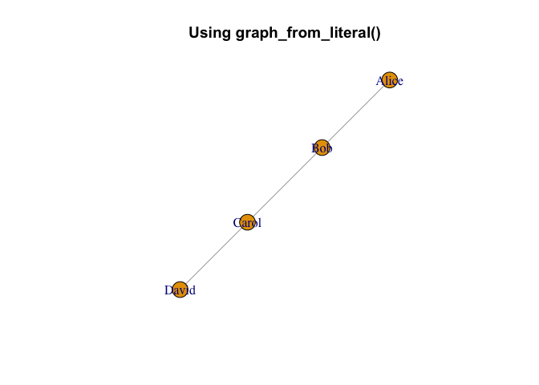
# Directed network
g_directed <- graph_from_literal(Alice+-Bob, Bob+-Carol, Carol+-David)
plot(g_directed, main = "Directed with +-")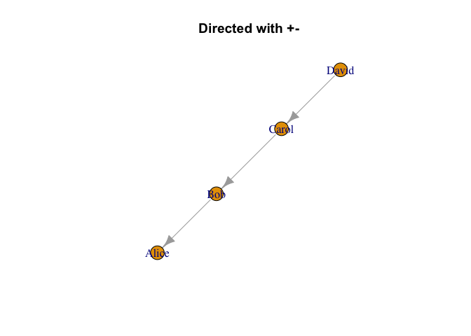
Note: The data frame method is better for real data because:
Your data is usually already in a spreadsheet/CSV
You can add attributes easily
It’s reproducible and follows tidy principles
Class Exercise 1:
Create your own small network:
Make a tibble edge list of 5-6 people and their connections
Add a
strengthcolumn (1-10 scale)Convert to igraph network
Plot with edge width based on strength
Calculate and interpret the degrees
# Your workspace:2. Network Structures: Theory Meets Practice
Why do network structures matter? Different social phenomena create different network patterns. Understanding these patterns helps us:
Identify what kind of social process created the network
Compare real networks to theoretical models
Predict how information, influence, or resources flow
Additional Resource: For more in-depth tutorials on network analysis in R, see Katya Ognyanova’s excellent tutorials - highly recommended for expanding your network analysis skills!
2.1 Basic Network Structures
These are building blocks that help us understand more complex real-world networks.
Empty Graph
A network with nodes but no connections. This represents the starting point before any relationships form.
# 20 people who haven't met yet
empty_net <- make_empty_graph(20)
plot(empty_net,
vertex.size = 15,
vertex.color = "lightgray",
vertex.label = NA,
main = "Empty Network\n(No connections yet)")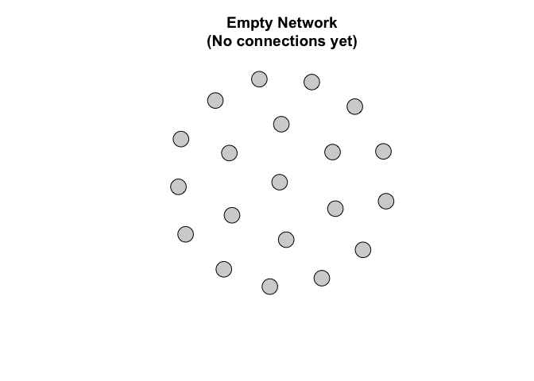
Real-world example: A new online platform before users start connecting.
Complete Graph (Fully Connected)
Every node connects to every other node. This represents maximum possible connectivity where all relationships exist.
# Small group where everyone knows everyone
complete_net <- make_full_graph(8)
plot(complete_net,
vertex.size = 20,
vertex.color = "lightblue",
vertex.label = NA,
main = "Complete Network\n(Everyone knows everyone)")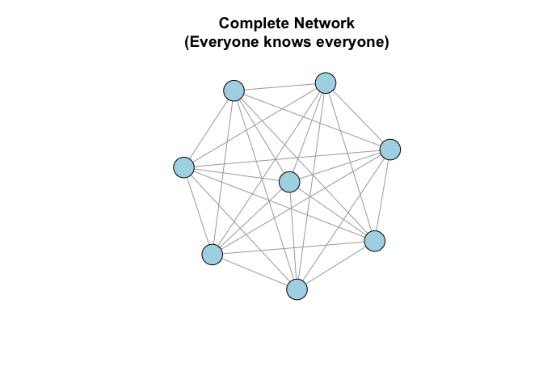
Real-world example: A small work team or friend group where everyone interacts with everyone else.
Question: Why are complete graphs rare in large networks?
Star Network
One central hub connected to all others, but periphery nodes don’t connect to each other. This creates a single point of control where all information flows through the center.
# One influencer with many followers
star_net <- make_star(15, mode = "undirected")
plot(star_net,
vertex.size = c(30, rep(15, 14)), # Make center larger
vertex.color = c("red", rep("lightblue", 14)),
vertex.label = NA,
main = "Star Network\n(Central hub)")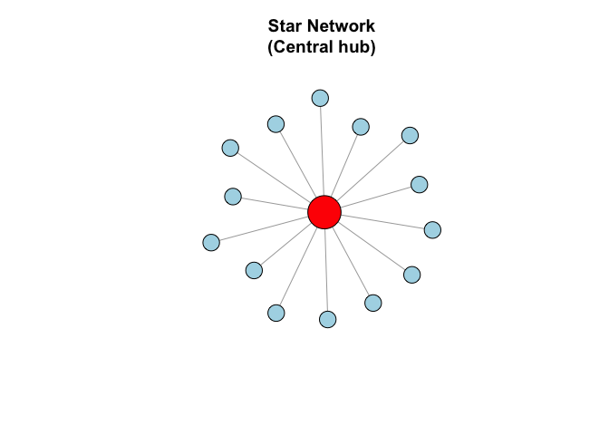
Real-world examples:
An influencer and their followers (who don’t follow each other)
A professor and students in office hours
A help desk and clients
Key insight: Central node has enormous power and control over information flow.
Ring Network
Each node connects to two neighbors, forming a closed loop. Information must pass through many intermediaries to travel across the network.
# People sitting in a circle
ring_net <- make_ring(20)
plot(ring_net,
vertex.size = 15,
vertex.color = "lightgreen",
vertex.label = NA,
layout = layout_in_circle,
main = "Ring Network\n(Local connections only)")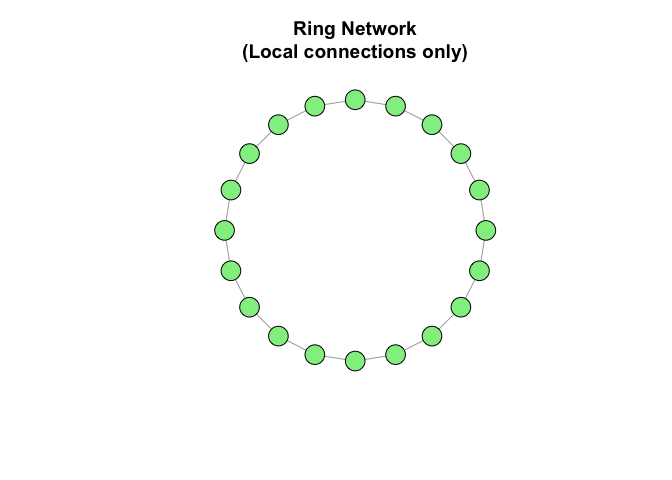
Real-world example:
Neighbors on a street (you know the house to your left and right)
A “telephone game” or rumor chain
Key insight: Information takes a long time to spread across the network.
Tree/Hierarchical Network
Branching structure with no cycles where you can’t return to a node by following edges. This represents formal organizational hierarchies with clear authority paths.
# Organizational chart
tree_net <- make_tree(40, children = 3, mode = "undirected")
plot(tree_net,
vertex.size = 10,
vertex.color = "lightyellow",
vertex.label = NA,
main = "Tree Network\n(Hierarchical structure)")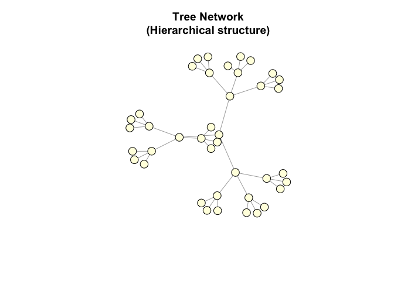
Real-world examples:
Corporate org charts
Family trees
File systems on computers
Key insight: Clear hierarchy, efficient information flow up and down, but no shortcuts.
2.2 Random and Theoretical Network Models
These models help us understand how real networks form and function.
Erdős-Rényi Random Graph
Connections are formed completely at random with equal probability between any two nodes. This serves as a null model - what would happen if social forces didn’t exist?
# Random connections: 100 nodes, 200 random edges
random_net <- sample_gnm(n = 100, m = 200)
plot(random_net,
vertex.size = 5,
vertex.color = "lightcoral",
vertex.label = NA,
main = "Random Network\n(Erdős-Rényi Model)")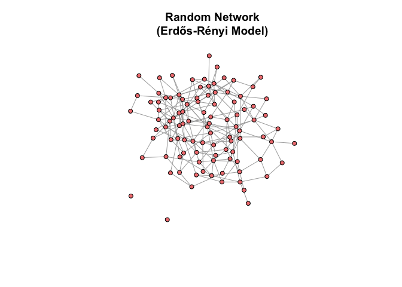
Question: Do real social networks look like this? (Hint: No!)
Why not? People don’t befriend others randomly - we have homophily (like attracts like), triadic closure (friends of friends become friends), etc.
Small-World Network (Watts-Strogatz Model)
Combines local clustering (you know your neighbors’ neighbors) with occasional long-range connections (shortcuts across the network). This explains the “six degrees of separation” phenomenon where distant people are connected by surprisingly short paths.
# Most connections are local, with a few long-distance links
small_world <- sample_smallworld(dim = 1, size = 30, nei = 2, p = 0.05)
plot(small_world,
vertex.size = 8,
vertex.color = "lightblue",
vertex.label = NA,
layout = layout_in_circle,
main = "Small-World Network\n('Six degrees of separation')")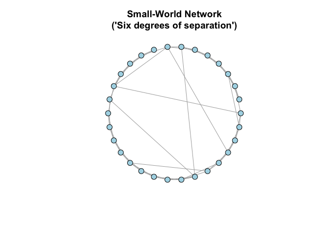
Real-world examples: - Social networks (you know your friends and their friends, plus a few random connections)
The famous “six degrees of separation” phenomenon
Neural networks in the brain
Key insight: Explains why information can spread quickly despite most connections being local.
Scale-Free Network (Barabási-Albert Model)
“Rich get richer” via preferential attachment - new nodes preferentially connect to already well-connected nodes, creating hubs. This creates power-law degree distributions where most nodes have few connections but a few hubs have many.
# Preferential attachment: popular nodes get more connections
scale_free <- sample_pa(n = 100, power = 1, m = 2, directed = FALSE)
# Calculate degree to identify hubs
deg <- degree(scale_free)
# Color hubs differently
V(scale_free)$color <- ifelse(deg > 10, "red", "lightblue")
V(scale_free)$size <- sqrt(deg) * 3
plot(scale_free,
vertex.label = NA,
main = "Scale-Free Network\n(Red = Hubs with many connections)")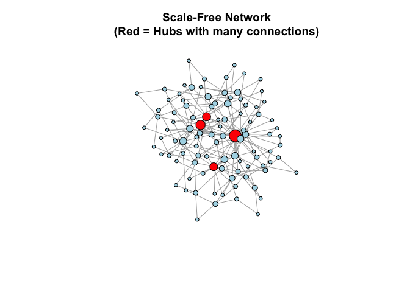
Real-world examples:
Twitter (celebrities have millions of followers, most people have few)
Citation networks (seminal papers get cited thousands of times)
World Wide Web (some sites have millions of links)
Airline networks (major hubs like Atlanta, Chicago)
Key insight:
A few nodes (hubs) have massive influence
“Removing” hubs can collapse the network
Information spreads very quickly through hubs
2.3 Comparing Network Structures
Let’s visualize degree distributions to see the difference:
# Calculate degrees for each model
deg_random <- degree(random_net)
deg_scale_free <- degree(scale_free)
# Create comparison data frame
comparison <- tibble(
model = c(rep("Random", length(deg_random)),
rep("Scale-Free", length(deg_scale_free))),
degree = c(deg_random, deg_scale_free)
)
# Plot
ggplot(comparison, aes(x = degree, fill = model)) +
geom_histogram(alpha = 0.6, position = "identity", bins = 20) +
labs(title = "Degree Distribution: Random vs Scale-Free",
x = "Degree (number of connections)",
y = "Count",
fill = "Network Type") +
theme_minimal()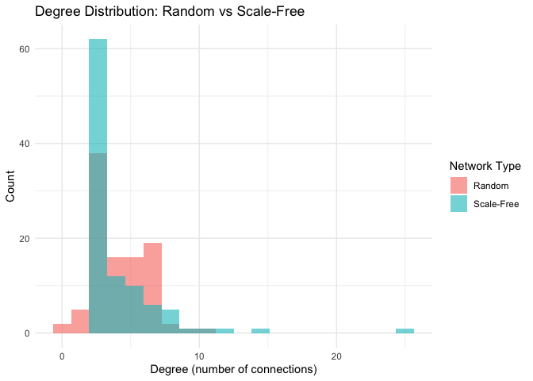
Interpretation:
Random network: Most nodes have similar degrees (bell curve)
Scale-free network: A few hubs with many connections, most nodes have few connections (power-law distribution)
2.4 Famous Example: Zachary’s Karate Club
A real-world social network collected by Wayne Zachary in the 1970s. It shows friendships in a karate club that eventually split into two groups due to a conflict between the instructor and administrator.
# Load the famous karate club network
karate <- graph("Zachary")
# Plot
plot(karate,
vertex.size = 15,
vertex.color = "orange",
main = "Zachary's Karate Club\n(Real social network from 1977)")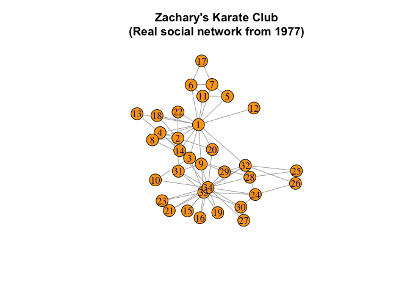
Why is this dataset famous?
Real social network data from systematic observation
Documents a social fission (club split due to conflict)
Used to test community detection algorithms
Gold standard for validating network analysis methods
We’ll analyze this more later!
2.5 Network Operations
Sometimes we need to modify or combine networks for analysis or comparison.
Rewiring Edges
Randomly rewire some connections while preserving the degree distribution. This creates null models for statistical comparison.
# Original ring network
original <- make_ring(20)
# Rewire 20% of edges randomly
rewired <- rewire(original, each_edge(prob = 0.2))
# Compare
par(mfrow = c(1, 2))
plot(original,
vertex.size = 10,
vertex.label = NA,
layout = layout_in_circle,
main = "Original Ring")
plot(rewired,
vertex.size = 10,
vertex.label = NA,
layout = layout_in_circle,
main = "After Rewiring")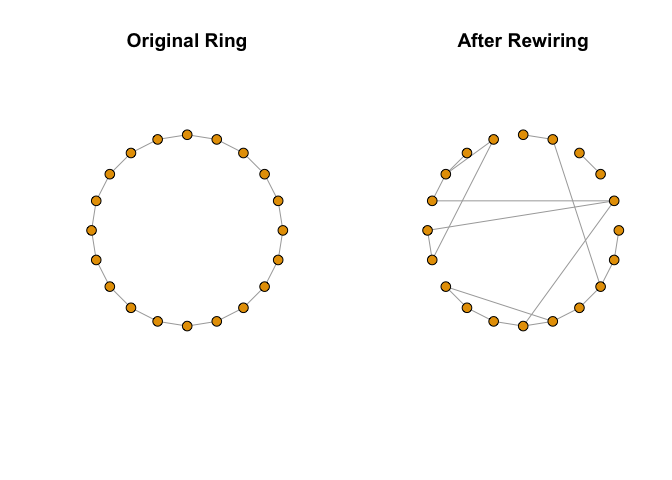
par(mfrow = c(1, 1))Use case: Testing whether network structure affects an outcome, or creating null models for statistical comparison.
Extracting Subgraphs
Extract a subset of nodes and their connections to focus analysis on specific communities or influential actors.
# Create a larger network
full_net <- sample_pa(n = 100, m = 2, directed = FALSE)
# Extract only nodes with degree > 5 (the most connected)
high_degree_nodes <- V(full_net)[degree(full_net) > 5]
subgraph <- induced_subgraph(full_net, high_degree_nodes)
# Compare
par(mfrow = c(1, 2))
plot(full_net,
vertex.size = 5,
vertex.label = NA,
main = "Full Network")
plot(subgraph,
vertex.size = 10,
vertex.label = NA,
main = "High-Degree Subgraph")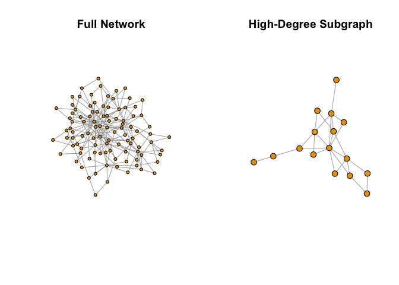
par(mfrow = c(1, 1))Use case: Focusing on influencers or core members of a community.
Class Exercise 2:
Create a scale-free network with 50 nodes
Calculate the degree of each node
Identify the top 3 “hubs” (nodes with highest degree)
Create a subgraph containing only these hubs and their immediate neighbors
Plot both networks and compare
Bonus: What happens if you remove the hubs from a scale-free network? Try it!
# Your workspace:Additional Resources:
Katya Ognyanova’s Network Tutorials - comprehensive guides for network visualization and analysis
igraph documentation - official package reference
Let’s clean up our workspace before moving to real data:
rm(list = ls())3. Real World Data: College Communication Network
3.1 Understanding Real Network Data
Now let’s work with a real communication network from UC Irvine. This dataset contains private messages sent on an online platform between students over 193 days in 2004.
Why this dataset?
Real human communication patterns
Directed network (messages have a sender and receiver)
Temporal data (we can see when messages were sent)
Relevant to students - college communication!
Dataset info:
Nodes: 1,899 students
Edges: 20,296 messages
Time period: 193 days (April-October 2004)
Source: Stanford SNAP Pietro Panzarasa, Tore Opsahl, and Kathleen M. Carley. “Patterns and dynamics of users’ behavior and interaction: Network analysis of an online community.” Journal of the American Society for Information Science and Technology 60.5 (2009): 911-932.
3.2 Loading Real Network Data (The Tidy Way)
Network data often comes as an edge list - a table where each row is a connection. Let’s load and explore it:
# Load the data from GitHub backup
url <- "https://raw.githubusercontent.com/aysedeniz09/IntroCSS/refs/heads/main/data/CollegeMsg.txt"
college_msg <- read.table(url, header = FALSE,
col.names = c("sender", "receiver", "timestamp"))
# Convert to tibble for tidy operations
college_msg <- as_tibble(college_msg)
# View the data
head(college_msg)## # A tibble: 6 × 3
## sender receiver timestamp
## <int> <int> <int>
## 1 1 2 1082040961
## 2 3 4 1082155839
## 3 5 2 1082414391
## 4 6 7 1082439619
## 5 8 7 1082439756
## 6 9 10 1082440403What does each row mean?
sender: Student ID who sent the messagereceiver: Student ID who received the messagetimestamp: Unix timestamp (seconds since January 1, 1970)
Let’s make the timestamp more readable:
# Convert Unix timestamp to readable date
college_msg <- college_msg |>
mutate(date = as.POSIXct(timestamp, origin = "1970-01-01"),
month = lubridate::month(date, label = TRUE),
day_of_week = lubridate::wday(date, label = TRUE))
# View the updated data
head(college_msg)## # A tibble: 6 × 6
## sender receiver timestamp date month day_of_week
## <int> <int> <int> <dttm> <ord> <ord>
## 1 1 2 1082040961 2004-04-15 10:56:01 Apr Thu
## 2 3 4 1082155839 2004-04-16 18:50:39 Apr Fri
## 3 5 2 1082414391 2004-04-19 18:39:51 Apr Mon
## 4 6 7 1082439619 2004-04-20 01:40:19 Apr Tue
## 5 8 7 1082439756 2004-04-20 01:42:36 Apr Tue
## 6 9 10 1082440403 2004-04-20 01:53:23 Apr Tueprint(paste("Date range:", min(college_msg$date), "to", max(college_msg$date)))## [1] "Date range: 2004-04-15 10:56:01 to 2004-10-26 03:52:22"3.3 Exploring the Data Before Building the Network
Before creating the network, let’s explore the data using tidy principles:
# How many unique students?
n_students <- length(unique(c(college_msg$sender, college_msg$receiver)))
print(paste("Number of students:", n_students))## [1] "Number of students: 1899"# How many messages total?
print(paste("Total messages:", nrow(college_msg)))## [1] "Total messages: 59835"# Who are the most active senders?
top_senders <- college_msg |>
count(sender, sort = TRUE) |>
head(10)
print("Top 10 most active senders:")## [1] "Top 10 most active senders:"print(top_senders)## # A tibble: 10 × 2
## sender n
## <int> <int>
## 1 9 1091
## 2 323 1012
## 3 12 993
## 4 103 739
## 5 105 686
## 6 1624 640
## 7 41 561
## 8 249 493
## 9 372 485
## 10 32 457# Who receives the most messages?
top_receivers <- college_msg |>
count(receiver, sort = TRUE) |>
head(10)
print("Top 10 most contacted students:")## [1] "Top 10 most contacted students:"print(top_receivers)## # A tibble: 10 × 2
## receiver n
## <int> <int>
## 1 1624 558
## 2 323 534
## 3 32 501
## 4 103 440
## 5 372 428
## 6 454 377
## 7 475 372
## 8 254 351
## 9 617 351
## 10 105 345Question: What does it mean if someone is a top sender but not a top receiver?
3.4 Temporal Patterns: When Do Students Communicate?
Let’s explore communication patterns over time:
# Messages per month
messages_per_month <- college_msg |>
group_by(month) |>
summarize(n_messages = n())
# Plot
ggplot(messages_per_month, aes(x = month, y = n_messages)) +
geom_col(fill = "steelblue") +
labs(title = "Messages Sent Per Month",
x = "Month",
y = "Number of Messages") +
theme_minimal()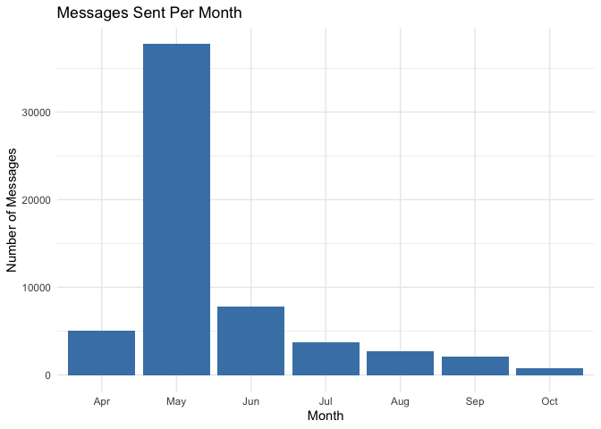
# Messages per day of week
messages_per_day <- college_msg |>
group_by(day_of_week) |>
summarize(n_messages = n())
# Plot
ggplot(messages_per_day, aes(x = day_of_week, y = n_messages)) +
geom_col(fill = "coral") +
labs(title = "Messages Sent Per Day of Week",
x = "Day of Week",
y = "Number of Messages") +
theme_minimal()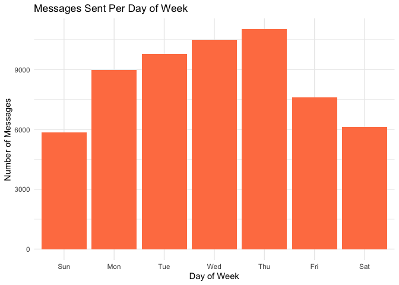
Class discussion:
When are students most/least active?
What might explain these patterns?
How does this relate to Breiger’s (1974) concept of duality - students connected through temporal patterns?
3.5 Building the Network Graph
Now let’s create the network from our edge list:
# Create network from edge list
# Note: This is a DIRECTED network (sender → receiver)
g_college <- graph_from_data_frame(
d = college_msg |> select(sender, receiver), # Edge list
directed = TRUE # Messages have direction
)
# Check the network object
print(g_college)## IGRAPH b11a3d8 DN-- 1899 59835 --
## + attr: name (v/c)
## + edges from b11a3d8 (vertex names):
## [1] 1 ->2 3 ->4 5 ->2 6 ->7 8 ->7 9 ->10 9 ->11 12->13 9 ->14 9 ->15
## [11] 9 ->16 9 ->17 9 ->14 9 ->18 19->18 20->21 19->22 8 ->23 9 ->24 9 ->22
## [21] 25->21 26->7 27->28 29->25 30->31 30->31 30->31 30->31 32->33 34->35
## [31] 34->33 36->37 38->39 36->40 41->15 41->11 41->14 41->13 41->39 41->42
## [41] 41->43 9 ->40 44->45 46->22 44->46 47->46 48->46 9 ->49 36->50 44->51
## [51] 32->52 36->32 53->54 36->55 56->57 36->32 36->58 44->59 51->58 44->14
## [61] 36->56 36->60 56->61 62->50 36->60 32->59 36->60 36->50 41->63 41->64
## [71] 41->65 41->56 41->61 41->43 41->52 41->58 41->59 9 ->64 9 ->58 12->66
## + ... omitted several edgesUnderstanding the output:
DN--means Directed, Named networkFirst number = nodes (students)
Second number = edges (messages)
# Basic network statistics
print(paste("Number of students:", vcount(g_college)))## [1] "Number of students: 1899"print(paste("Number of messages:", ecount(g_college)))## [1] "Number of messages: 59835"print(paste("Network density:", round(edge_density(g_college), 4)))## [1] "Network density: 0.0166"Network density: What proportion of all possible connections actually exist?
Dense networks: High interconnection
Sparse networks: Few connections relative to possible connections
Question: Why is this network so sparse? What does this tell us about college communication?
3.6 Visualizing the Full Network
# WARNING: This network is too large to visualize meaningfully
# Let's try it anyway to see what happens
plot(g_college,
vertex.size = 2,
vertex.label = NA,
edge.arrow.size = 0.1,
edge.color = rgb(0, 0, 0, 0.1), # Transparent edges
main = "Full College Network\n(Hard to interpret!)")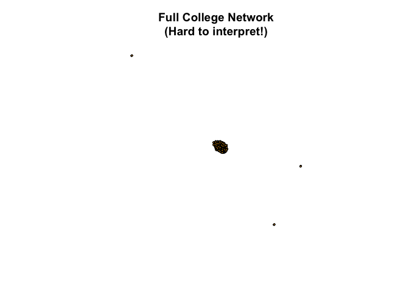
Problem: With 1,899 nodes and 20,296 edges, the full network is a “hairball” - impossible to interpret visually!
Solution: We need to focus on meaningful subsets.
3.7 Creating a Meaningful Subnetwork
Let’s focus on the most active communicators - students who sent at least 50 messages:
# Identify active students
active_senders <- college_msg |>
group_by(sender) |>
summarize(n_sent = n()) |>
filter(n_sent >= 50) |>
pull(sender)
print(paste("Number of active senders:", length(active_senders)))## [1] "Number of active senders: 298"# Also include anyone they communicated with
active_network <- college_msg |>
filter(sender %in% active_senders | receiver %in% active_senders)
print(paste("Messages in active subnetwork:", nrow(active_network)))## [1] "Messages in active subnetwork: 54947"Now create a network from this subset:
# Create subnetwork
g_active <- graph_from_data_frame(
d = active_network |> select(sender, receiver),
directed = TRUE
)
print(g_active)## IGRAPH e45a7a0 DN-- 1712 54947 --
## + attr: name (v/c)
## + edges from e45a7a0 (vertex names):
## [1] 1 ->2 3 ->4 6 ->7 8 ->7 9 ->10 9 ->11 12->13 9 ->14 9 ->15 9 ->16
## [11] 9 ->17 9 ->14 9 ->18 19->18 19->22 8 ->23 9 ->24 9 ->22 26->7 27->28
## [21] 32->33 34->35 34->33 36->37 38->39 36->40 41->15 41->11 41->14 41->13
## [31] 41->39 41->42 41->43 9 ->40 44->45 44->46 48->46 9 ->49 36->50 44->51
## [41] 32->52 36->32 53->54 36->55 36->32 36->58 44->59 51->58 44->14 36->56
## [51] 36->60 62->50 36->60 32->59 36->60 36->50 41->63 41->64 41->65 41->56
## [61] 41->61 41->43 41->52 41->58 41->59 9 ->64 9 ->58 12->66 32->58 12->66
## [71] 67->32 41->32 67->32 32->68 68->56 67->32 67->32 68->61 67->32 67->8
## + ... omitted several edges# Plot the subnetwork
plot(g_active,
vertex.size = 5,
vertex.label = NA,
vertex.color = "lightblue",
edge.arrow.size = 0.3,
edge.color = rgb(0, 0, 0, 0.2),
main = "Active Communicators Subnetwork\n(Students who sent 50+ messages)")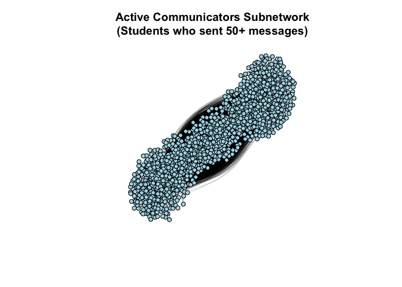
Much better! Now we can see structure.
3.8 Network Statistics: Who is Important?
3.8.1 Degree Centrality
Degree = number of connections. In directed networks:
Out-degree: Number of messages SENT
In-degree: Number of messages RECEIVED
Total degree: Sum of both
# Calculate degrees for the active network
out_deg <- degree(g_active, mode = "out")
in_deg <- degree(g_active, mode = "in")
total_deg <- degree(g_active, mode = "all")
# Create a summary data frame
degree_summary <- tibble(
student = V(g_active)$name,
out_degree = out_deg,
in_degree = in_deg,
total_degree = total_deg
)
# Top 10 by out-degree (most active senders)
top_senders_degree <- degree_summary |>
arrange(desc(out_degree)) |>
head(10)
print("Top 10 Most Active Senders (Out-Degree):")## [1] "Top 10 Most Active Senders (Out-Degree):"print(top_senders_degree)## # A tibble: 10 × 4
## student out_degree in_degree total_degree
## <chr> <dbl> <dbl> <dbl>
## 1 9 1091 198 1289
## 2 323 1012 534 1546
## 3 12 993 217 1210
## 4 103 739 440 1179
## 5 105 686 345 1031
## 6 1624 640 558 1198
## 7 41 561 186 747
## 8 249 493 257 750
## 9 372 485 428 913
## 10 32 457 501 958# Top 10 by in-degree (most popular receivers)
top_receivers_degree <- degree_summary |>
arrange(desc(in_degree)) |>
head(10)
print("Top 10 Most Popular Receivers (In-Degree):")## [1] "Top 10 Most Popular Receivers (In-Degree):"print(top_receivers_degree)## # A tibble: 10 × 4
## student out_degree in_degree total_degree
## <chr> <dbl> <dbl> <dbl>
## 1 1624 640 558 1198
## 2 323 1012 534 1546
## 3 32 457 501 958
## 4 103 739 440 1179
## 5 372 485 428 913
## 6 454 227 377 604
## 7 475 181 372 553
## 8 254 213 351 564
## 9 617 394 351 745
## 10 105 686 345 1031Interpretation:
High out-degree = Very active sender
High in-degree = Very popular/central receiver
High total degree = Overall hub in the network
# Visualize degree distribution
ggplot(degree_summary, aes(x = total_degree)) +
geom_histogram(binwidth = 5, fill = "steelblue", color = "white") +
labs(title = "Degree Distribution",
x = "Total Degree",
y = "Number of Students") +
theme_minimal()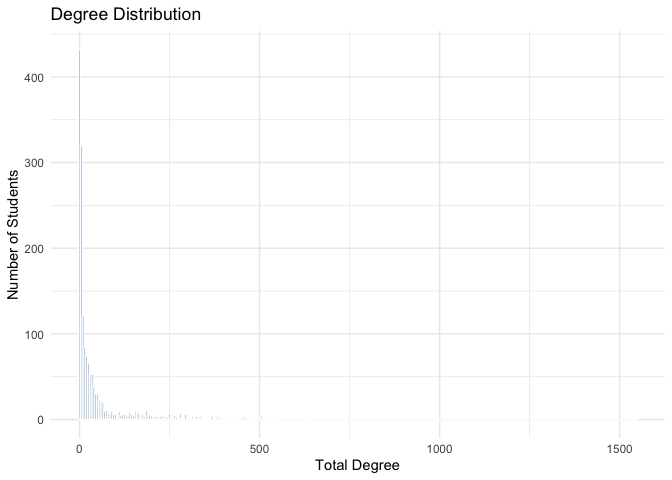
What do we see? Most students have few connections, a few students have many - this is a scale-free pattern!
3.8.2 Visualize Network with Degree
Let’s size nodes by their total degree:
# Size nodes by degree
V(g_active)$size <- sqrt(total_deg) * 2
# Color by in-degree (popularity)
# Create color gradient
color_scale <- colorRampPalette(c("lightblue", "darkred"))(max(in_deg) + 1)
V(g_active)$color <- color_scale[in_deg + 1]
plot(g_active,
vertex.label = NA,
edge.arrow.size = 0.2,
edge.color = rgb(0, 0, 0, 0.2),
main = "College Network by Degree\n(Size = total degree, Color = in-degree/popularity)")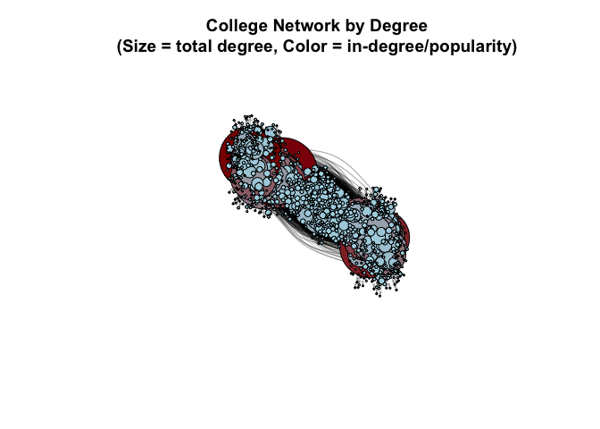
Red nodes = Students who receive many messages (popular)
Large nodes = Students with many connections overall
3.9 Betweenness Centrality: Who Bridges Different Groups?
Betweenness measures how often a node lies on the shortest path between other nodes. High betweenness = broker or bridge between different groups.
# Calculate betweenness (this can take a moment for larger networks)
betw <- betweenness(g_active, directed = TRUE)
# Add to our summary
degree_summary$betweenness <- betw
# Top 10 by betweenness
top_brokers <- degree_summary |>
arrange(desc(betweenness)) |>
head(10)
print("Top 10 Brokers (Highest Betweenness):")## [1] "Top 10 Brokers (Highest Betweenness):"print(top_brokers)## # A tibble: 10 × 5
## student out_degree in_degree total_degree betweenness
## <chr> <dbl> <dbl> <dbl> <dbl>
## 1 32 457 501 958 125242.
## 2 103 739 440 1179 105055.
## 3 105 686 345 1031 100941.
## 4 42 346 263 609 96759.
## 5 400 443 236 679 95504.
## 6 9 1091 198 1289 86611.
## 7 713 446 196 642 70779.
## 8 249 493 257 750 68428.
## 9 638 397 231 628 67989.
## 10 372 485 428 913 66930.Key insight from Breiger (1974): These students act as bridges between different social circles. They may not be the most popular, but they connect different groups!
# Visualize with betweenness
V(g_active)$size <- sqrt(betw) / 3
V(g_active)$color <- ifelse(betw > median(betw), "orange", "lightblue")
plot(g_active,
vertex.label = NA,
edge.arrow.size = 0.2,
edge.color = rgb(0, 0, 0, 0.1),
main = "College Network by Betweenness\n(Orange = High betweenness brokers)")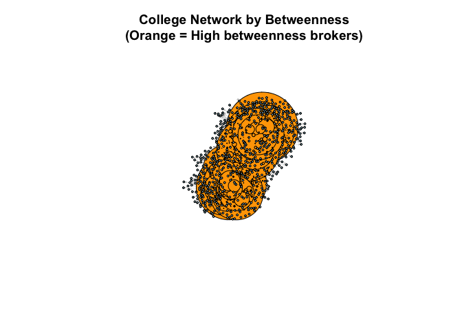
3.10 Reciprocity: Do Students Message Each Other Back?
In communication networks, reciprocity is important - do people respond to messages?
# Calculate reciprocity
recip <- reciprocity(g_active)
print(paste("Reciprocity:", round(recip, 3)))## [1] "Reciprocity: 0.611"Interpretation:
Reciprocity = 0: No mutual communication
Reciprocity = 1: All communication is mutual
Our value = ?
Let’s find examples of reciprocal vs non-reciprocal relationships:
# Find mutual edges (both A→B and B→A exist)
mutual_edges <- which_mutual(g_active)
print(paste("Number of mutual connections:", sum(mutual_edges)))## [1] "Number of mutual connections: 42805"# Calculate percentage
pct_mutual <- (sum(mutual_edges) / ecount(g_active)) * 100
print(paste("Percentage of edges that are mutual:", round(pct_mutual, 1), "%"))## [1] "Percentage of edges that are mutual: 77.9 %"Class Exercise 3:
Using the full g_college network:
Calculate the in-degree for all students
Create a histogram of in-degree distribution
Identify the top 5 “popular” students (highest in-degree)
Create a subnetwork containing only these 5 students and their immediate neighbors
Calculate the reciprocity of this subnetwork
Questions to consider:
How does this subnetwork’s reciprocity compare to the full network?
What does this tell us about communication patterns around popular students?
# Your workspace:4. Clustering & Communities
Community detection helps us understand how networks are organized into groups. In social networks, communities represent groups of people who interact more with each other than with outsiders.
Why This Matters:
Identify friend groups or cliques
Understand information flow patterns
Detect organizational substructures
Find isolated or bridge communities
4.1 Transitivity (Clustering Coefficient)
Transitivity measures how “clique-like” a network is. If student A messages student B, and student B messages student C, how likely is it that student A also messages student C?
High transitivity → tight-knit groups (e.g., close friend circles)
Low transitivity → loose connections (e.g., broadcasting to many)
# Calculate global transitivity for the full network
trans_full <- transitivity(g_college, type = "global")
print(paste("Global transitivity:", round(trans_full, 3)))## [1] "Global transitivity: 0.057"# Calculate for our active students subnetwork
trans_sub <- transitivity(g_active, type = "global")
print(paste("Active students transitivity:", round(trans_sub, 3)))## [1] "Active students transitivity: 0.055"Interpretation:
Values range from 0 (no triangles) to 1 (all possible triangles exist)
Social networks typically have higher transitivity than random networks
Compare these values to a random network with the same size:
# Create a random network with same number of nodes and edges
random_net <- sample_gnm(n = vcount(g_active), m = ecount(g_active), directed = TRUE)
trans_random <- transitivity(random_net, type = "global")
print(paste("Random network transitivity:", round(trans_random, 3)))## [1] "Random network transitivity: 0.037"The college network should have higher transitivity than random, showing real social structure.
4.2 Community Detection (Louvain Method)
The Louvain algorithm finds groups of students who message each other frequently. It maximizes modularity - a measure of how separated communities are.
Citation: Blondel, V. D., Guillaume, J.-L., Lambiotte, R., & Lefebvre, E. (2008). Fast unfolding of communities in large networks. Journal of Statistical Mechanics: Theory and Experiment, 10, 1–12. https://doi.org/10.1088/1742-5468/2008/10/P10008
Important Note: Louvain works on undirected networks, so we’ll create an undirected version:
# Convert directed network to undirected
g_active_undirected <- as_undirected(g_active, mode = "collapse")
# Detect communities using Louvain method
communities <- cluster_louvain(g_active_undirected)
# Summary statistics
print(paste("Number of communities found:", length(communities)))## [1] "Number of communities found: 8"print(paste("Modularity score:", round(modularity(communities), 3)))## [1] "Modularity score: 0.248"# Show community sizes
community_sizes <- sizes(communities)
print("Community sizes:")## [1] "Community sizes:"print(sort(community_sizes, decreasing = TRUE))## Community sizes
## 2 6 4 3 1 5 7 8
## 443 350 259 226 215 172 34 13What is Modularity?
Measures how well-separated communities are
Ranges from -0.5 to 1
Higher values (>0.3) indicate strong community structure
Values < 0.3 suggest weak or no communities
4.3 Visualizing Communities
Let’s visualize the communities with different colors:
# Create a color palette for communities
num_communities <- length(communities)
colors <- rainbow(num_communities)
# Assign colors to nodes based on their community
V(g_active_undirected)$color <- colors[membership(communities)]
# Plot with communities highlighted
plot(communities, g_active_undirected,
vertex.size = 5,
vertex.label = NA,
edge.arrow.size = 0.3,
main = "Student Communication Communities")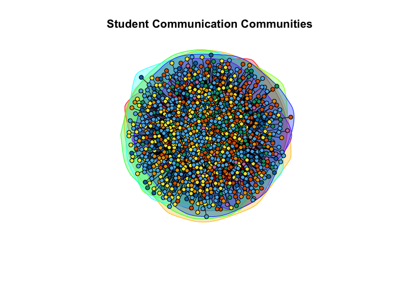
What do the communities represent?
Friend groups or social circles
Academic cohorts (e.g., same major, same dorm)
Study groups or project teams
Different communication patterns
4.4 Comparing Communities
Let’s analyze community characteristics:
# Create a tibble with node information
node_info <- tibble(
student_id = V(g_active_undirected)$name,
community = membership(communities),
degree = degree(g_active_undirected),
betweenness = betweenness(g_active_undirected)
)
# Summarize by community
community_summary <- node_info |>
group_by(community) |>
summarise(
n_students = n(),
avg_degree = mean(degree),
avg_betweenness = mean(betweenness),
.groups = "drop"
) |>
arrange(desc(n_students))
print(community_summary)## # A tibble: 8 × 4
## community n_students avg_degree avg_betweenness
## <membrshp> <int> <dbl> <dbl>
## 1 2 443 11.9 1759.
## 2 6 350 17.4 1813.
## 3 4 259 11.3 1619.
## 4 3 226 18.4 1480.
## 5 1 215 13.1 1465.
## 6 5 172 11.7 1649.
## 7 7 34 8.53 1272.
## 8 8 13 13.8 1003.Visualize community characteristics:
# Boxplot of degree by community (top 5 largest communities)
top_5_communities <- community_summary |>
slice_max(n_students, n = 5) |>
pull(community)
node_info |>
filter(community %in% top_5_communities) |>
ggplot(aes(x = factor(community), y = degree, fill = factor(community))) +
geom_boxplot() +
labs(
title = "Degree Distribution by Community",
x = "Community",
y = "Degree (Number of Connections)",
fill = "Community"
) +
theme_minimal()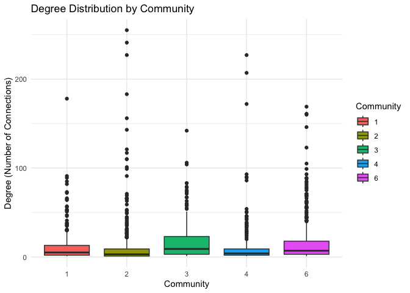
4.5 Edge Betweenness Community Detection (Alternative Method)
Another algorithm that works with directed networks:
# Edge betweenness community detection (works on directed networks)
communities_eb <- cluster_edge_betweenness(g_active)Difference between methods:
Louvain: Fast, good for large networks, optimizes modularity
Edge Betweenness: Slower, identifies “bridges” between communities, works on directed networks
Class Exercise 4: Community Analysis
Using the full college network (g_college):
Calculate the global transitivity coefficient
Create an undirected version and detect communities using Louvain
Find the 3 largest communities
Create a subnetwork containing only students from the largest community
Calculate the average in-degree and out-degree for students in this community
Bonus: Compare the transitivity of the largest community to the full network - is the largest community more “clique-like”?
# Your code here5. Gephi
5.1 Exporting to Gephi
Gephi is a powerful, open-source software tool designed specifically for interactive visualization and exploration of networks.
It provides a rich interface for analyzing structural properties, applying dynamic layouts, filtering, and producing high-quality visuals of complex networks.
While igraph in R is excellent for building and analyzing networks, Gephi allows for more control over visual layout, styling, and interactivity, which makes it especially useful when preparing network graphics for presentations or publications.
To export our graph to Gephi, we can use the write_graph() function from igraph:
write_graph(g_college, file = "../data/GameofThrones_Network.graphml", format = "graphml")5.2 Opening in Gephi
To open the network in Gephi:
Launch Gephi and select “Open Graph File”
Navigate to your .graphml file (e.g.,
college_network.graphml)

An Import Report will appear showing:
Number of nodes (1,712 in this example)
Number of edges (54,947)
Graph type (Directed/Undirected)

- Click OK to load the network into the Overview tab

5.3 Quick Overview of the Gephi Interface
Gephi has three main tabs:
Overview Tab: Where you layout, analyze, and manipulate the network visually
Data Laboratory: A spreadsheet view of your nodes and edges (like Excel)
Preview Tab: Renders publication-ready visuals with fine-tuned styling
Key Panels in Overview:
Graph (center): Visual display of your network
Appearance (left): Control node/edge colors and sizes
Layout (bottom left): Apply algorithms to position nodes
Statistics (right): Run network analysis metrics
Filters (right): Subset the network based on attributes
5.4 Copy Name to Label
Before visualizing, ensure node labels are visible:
Go to the Data Laboratory tab
Click Copy data to other column
Select “Id” or “name” as source, “Label” as target

- Return to Overview tab
Now node names will display when you enable labels in the graph window.
5.5 Running Community Detection
To identify clusters in your network, use the Modularity algorithm:
- In the Statistics panel (right), find “Modularity” under Community Detection

Click Run and a settings dialog will appear:
Randomize: Check this for consistent results
Use weights: Check if your edges have weight attributes
Resolution: Default is 1.0 (higher = more communities)

- Click OK to run
Result: Gephi adds a new node attribute called “Modularity Class”, assigning each node to a community (numbered 0, 1, 2, etc.).
5.6 Coloring Nodes by Community
Once Modularity is calculated, color nodes by their community:
Go to Appearance panel (top left) > Nodes tab
Click the palette icon (Partition)
Select “Modularity Class” from the dropdown

Gephi shows how many communities were detected (e.g., 14 communities)
You can choose a color palette or let Gephi assign random colors
Click Apply

Result: Nodes are now colored by their community membership, making clusters visually distinct.
5.7 Sizing Nodes by Degree
Make important nodes (those with more connections) larger:
In Appearance panel > Nodes tab, click the concentric circles icon (Ranking)
Select “Degree” from the dropdown
Degree: Total connections
In-Degree: Incoming edges (for directed graphs)
Out-Degree: Outgoing edges (for directed graphs)

Adjust the Min size and Max size sliders
Click Apply
Result: High-degree nodes (hubs) appear larger, while peripheral nodes remain small.
5.8 Applying a Layout Algorithm
Layouts position nodes to reveal network structure:
Go to the Layout panel (bottom left)
Select ForceAtlas 2 (ideal for medium-large networks)

Adjust settings if needed:
Scaling: Controls spread (higher = more spread out)
Stronger Gravity: Pulls nodes toward center
Dissuade Hubs: Prevents hubs from clustering too tightly
Click Run and watch the network reorganize
Click Stop once the layout stabilizes
Other useful layouts:
Yifan Hu: Fast, good for large networks
Fruchterman-Reingold: Classic layout for small networks
Circular: Arranges nodes in a circle
5.9 Filtering the Network
Filter to focus on specific parts of your network:
Open the Filters panel (right side)
Expand Attributes > Equal
Drag a filter (e.g., “Modularity Class”) to the Queries area

Select which communities to show (e.g., only Community 0 and 1)
Click Filter to apply
Other useful filters:
Degree Range: Show only nodes with 10-50 connections
Giant Component: Isolate the largest connected cluster
Edge Weight: Hide weak connections
5.10 Preview and Export
Once your network looks great, export it:
Go to the Preview tab
Click Refresh to render the network

Adjust settings:
Show Labels: Display node names
Edge thickness: Adjust edge visibility
Background color: Change from white to black or custom
Click Export: SVG/PDF/PNG at the bottom
Export formats:
PNG: For presentations and websites (raster image)
SVG: For publications and further editing in Adobe Illustrator (vector graphic)
PDF: For high-quality prints
5.11 Summary of Gephi Workflow
Import your
.graphmlfileCopy node names to labels (Data Laboratory)
Run Statistics (e.g., Modularity for community detection)
Color nodes by community (Appearance > Partition)
Size nodes by degree (Appearance > Ranking)
Apply Layout (e.g., ForceAtlas 2)
Filter to focus on subsets (Filters panel)
Preview and Export (Preview tab)
This workflow transforms raw network data into publication-ready visualizations that reveal hidden patterns and structures.
Lecture 11 Cheat Sheet: Network Analysis
| Function/Concept | Description | Code Example |
|---|---|---|
| Creating Networks | ||
graph() |
Create a simple graph from edge pairs | g <- graph(edges = c(1,2, 2,3), n = 3, directed = FALSE) |
graph_from_literal() |
Create graph with intuitive syntax | g <- graph_from_literal(A--B, B--C, C--A) |
graph_from_data_frame() |
Create network from data frame (edge list) | g <- graph_from_data_frame(df, directed = FALSE) |
| Network Properties | ||
vcount(g) |
Number of vertices (nodes) | vcount(g) # Returns 126 |
ecount(g) |
Number of edges (connections) | ecount(g) # Returns 845 |
summary(g) |
Overview of graph structure | summary(g) |
| Node/Edge Access | ||
V(g) |
Access vertices | V(g)$name # Get node names |
E(g) |
Access edges | E(g)$weight # Get edge weights |
| Adding Node Attributes | ||
| Add attribute | Assign properties to nodes | V(g)$color <- "blue" |
| Multiple attributes | Add metadata from data frame | V(g)$house <- df$house |
| Centrality Measures | ||
degree(g) |
Number of direct connections per node | deg <- degree(g) |
betweenness(g) |
How often a node sits on shortest paths | bet <- betweenness(g) |
closeness(g) |
Average distance to all other nodes | clo <- closeness(g) |
eigen_centrality(g) |
Influence based on connections to influential nodes | eig <- eigen_centrality(g)$vector |
| Community Detection | ||
cluster_louvain(g) |
Louvain modularity-based communities | comms <- cluster_louvain(g) |
cluster_walktrap(g) |
Random walk-based communities | comms <- cluster_walktrap(g) |
cluster_fast_greedy(g) |
Fast greedy optimization | comms <- cluster_fast_greedy(g) |
modularity(comms) |
Quality score of community structure | modularity(comms) |
| Network Metrics | ||
transitivity(g) |
Global clustering coefficient | transitivity(g, type = "global") |
diameter(g) |
Longest shortest path in network | diameter(g) |
mean_distance(g) |
Average path length | mean_distance(g) |
edge_density(g) |
Ratio of actual to possible edges | edge_density(g) |
| Network Models | ||
make_empty_graph(n) |
Graph with nodes but no edges | eg <- make_empty_graph(50) |
make_full_graph(n) |
Fully connected graph | fg <- make_full_graph(50) |
make_star(n) |
Star network (hub and spokes) | st <- make_star(50) |
make_ring(n) |
Ring/circle network | rn <- make_ring(50) |
sample_gnm(n, m) |
Erdős-Rényi random graph | er <- sample_gnm(n = 100, m = 50) |
sample_pa(n) |
Barabási-Albert scale-free network | ba <- sample_pa(n = 100, power = 1) |
| Plotting | ||
plot(g) |
Basic network visualization | plot(g, vertex.size = 5, vertex.label = NA) |
| Vertex size by degree | Scale node size by centrality | V(g)$size <- degree(g) / max(degree(g)) * 10 |
| Vertex color | Color nodes by attribute | V(g)$color <- ifelse(V(g)$gender == "F", "pink", "blue") |
| Edge width | Scale edge thickness by weight | plot(g, edge.width = E(g)$weight / 2) |
| Data Export | ||
write_graph() |
Export network for Gephi/other tools | write_graph(g, "network.graphml", format = "graphml") |
| Gephi Workflow | ||
| Import file | Open .graphml in Gephi | File > Open Graph File |
| Copy name to label | Make labels visible | Data Laboratory > Copy data to other column |
| Community detection | Run Modularity algorithm | Statistics > Modularity > Run |
| Color by community | Apply partition coloring | Appearance > Nodes > Partition > Modularity Class |
| Size by degree | Scale nodes by centrality | Appearance > Nodes > Ranking > Degree |
| Apply layout | Position nodes spatially | Layout > ForceAtlas 2 > Run |
| Filter network | Show subsets | Filters > Attributes > Equal > Modularity Class |
| Export visual | Save publication-ready image | Preview > Refresh > Export (SVG/PNG/PDF) |